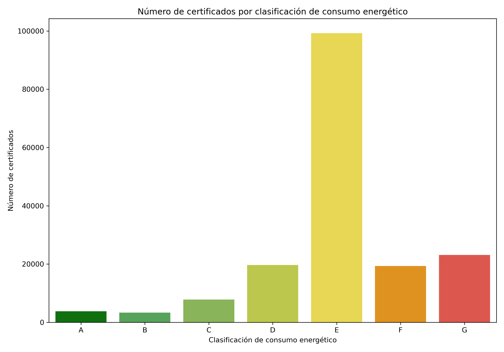
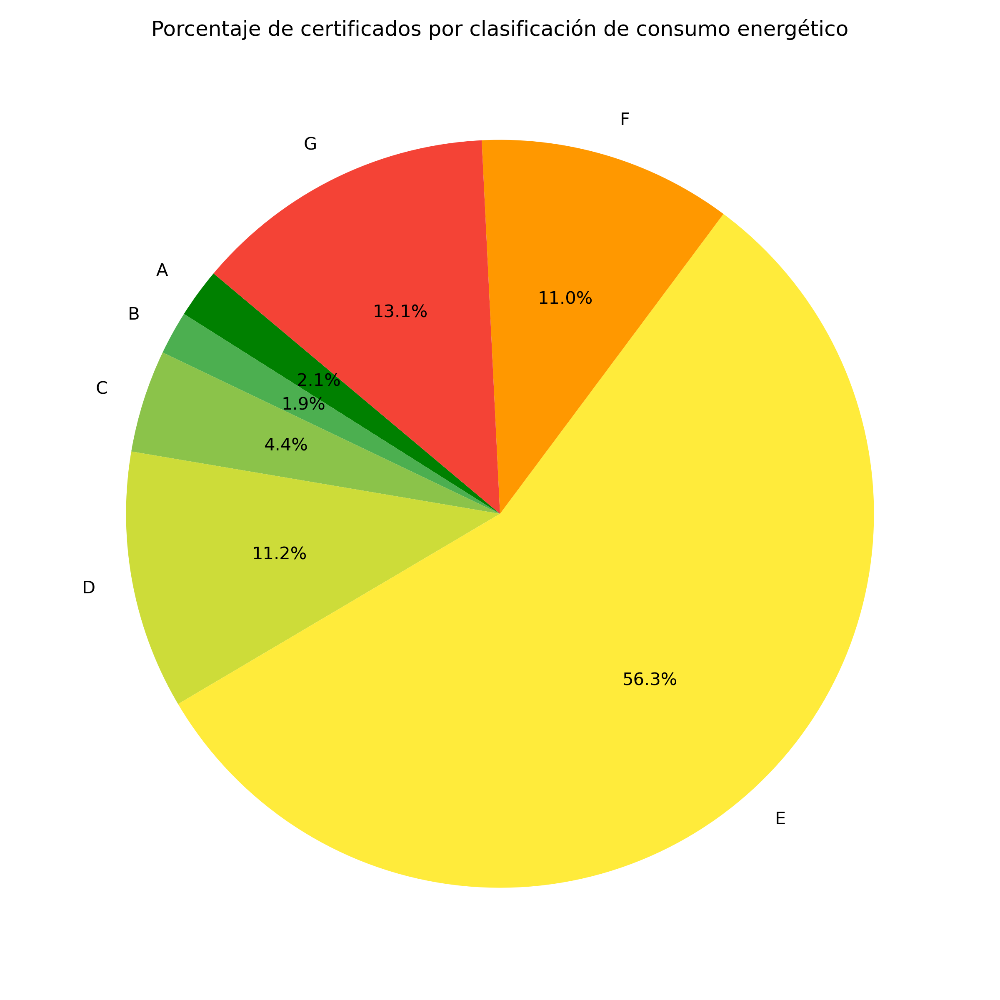
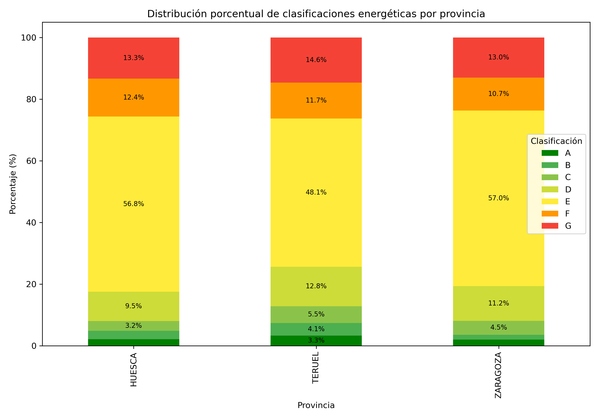
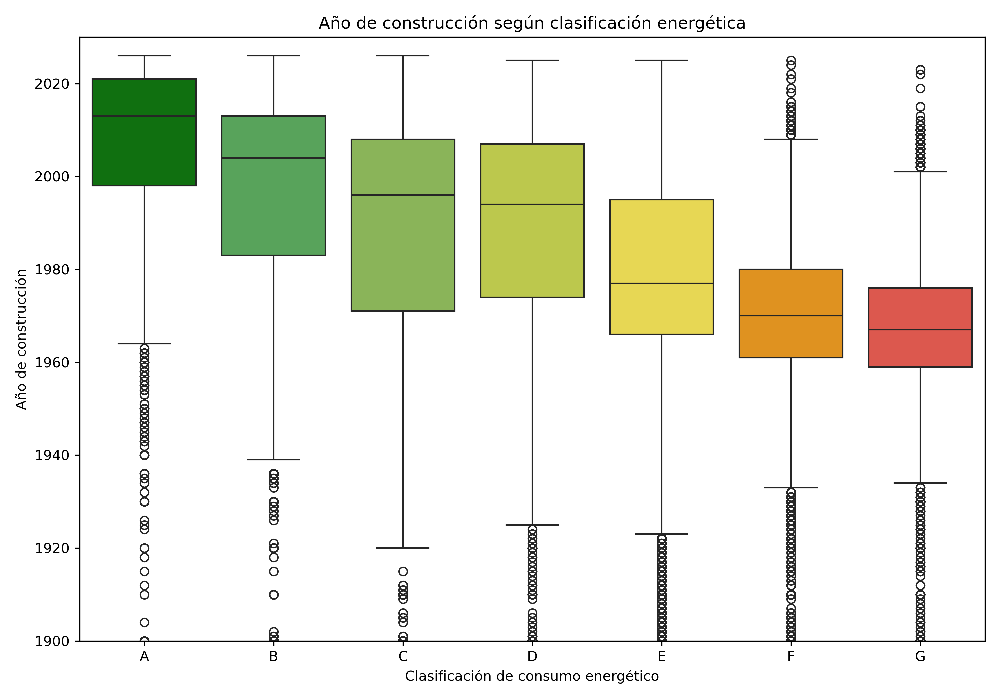

Europa marca el calendario de la rehabilitación energética
La Unión Europea ha establecido un calendario progresivo de exigencias de eficiencia energética para los edificios residenciales. El objetivo final es lograr un parque inmobiliario prácticamente descarbonizado en 2050, pero el camino pasa por dos hitos intermedios que afectarán a millones de propietarios en toda España.
Esta visualización analiza si el parque inmobiliario aragonés está en condiciones de cumplir esos objetivos, utilizando los datos del Registro de Certificación de Eficiencia Energética de Edificios de Aragón, publicados por la Dirección General de Energía y Minas del Gobierno de Aragón bajo licencia Creative Commons Attribution 4.0.
Antes de responder con datos, conviene entender el sistema de calificación energética. Cada edificio recibe una letra de la A (máxima eficiencia) a la G (mínima eficiencia), tanto en consumo de energía (kWh/m² año) como en emisiones de CO₂ (kgCO₂/m² año). Para cumplir el objetivo de 2030, un edificio debe estar, como mínimo, en la letra E; para 2033, en la D.
1. Distribución global de certificados por clasificación de consumo

Número de certificados energéticos emitidos en Aragón, agrupados por calificación de consumo (A-G). Generado a partir del conjunto de datos transformado tras la limpieza (176.281 certificados).
2. ¿Cuánto pesa cada calificación en el total? Vista proporcional

Distribución porcentual de los certificados por calificación de consumo energético. Cada sector representa la fracción del parque inmobiliario aragonés en esa letra.
3. ¿Varía la situación según la provincia?

Barras apiladas al 100% que muestran el reparto de calificaciones de consumo energético en cada una de las tres provincias aragonesas. Permite comparar su perfil energético relativo.
4. ¿Los edificios más antiguos son los menos eficientes?

Diagrama de caja que relaciona el año de construcción con la calificación de consumo energético. La mediana de cada caja indica el año de construcción típico de los edificios con esa calificación.
La perspectiva territorial permite identificar dónde se concentra el problema con mayor intensidad. A partir del conjunto de datos transformado agregado por municipio (609 municipios), se han construido dos vistas en Tableau Public que colorean cada municipio según el porcentaje de edificios que no alcanzarían el umbral exigido en cada horizonte temporal.
Pasa el cursor sobre cualquier municipio para ver su perfil detallado: número de certificados, antigüedad media del parque y la distribución completa de calificaciones.
Vista 1 — Objetivo 2030: municipios con mayor porcentaje de edificios en F o G
Se considera en riesgo para 2030 cualquier municipio cuya suma de edificios calificados con F o G supere un umbral significativo. Los municipios con tonos más rojizos requieren intervención prioritaria.

Vista 2 — Objetivo 2033: municipios con mayor porcentaje de edificios en E, F o G
Para 2033 el umbral mínimo sube a D, por lo que también los edificios actualmente en E (el grupo mayoritario, ~56%) pasan a considerarse en riesgo si no se rehabilitan. Esta vista revela la dimensión real del desafío a medio plazo.